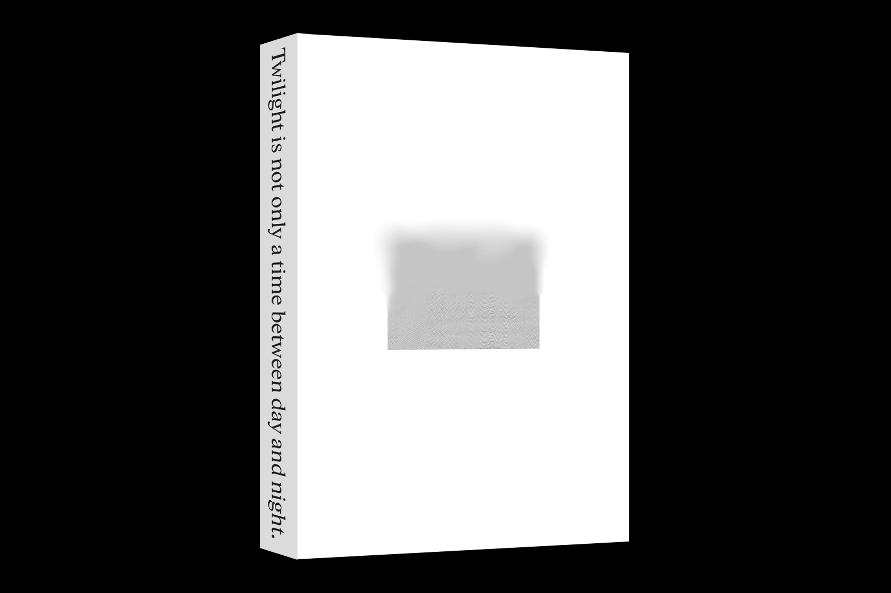
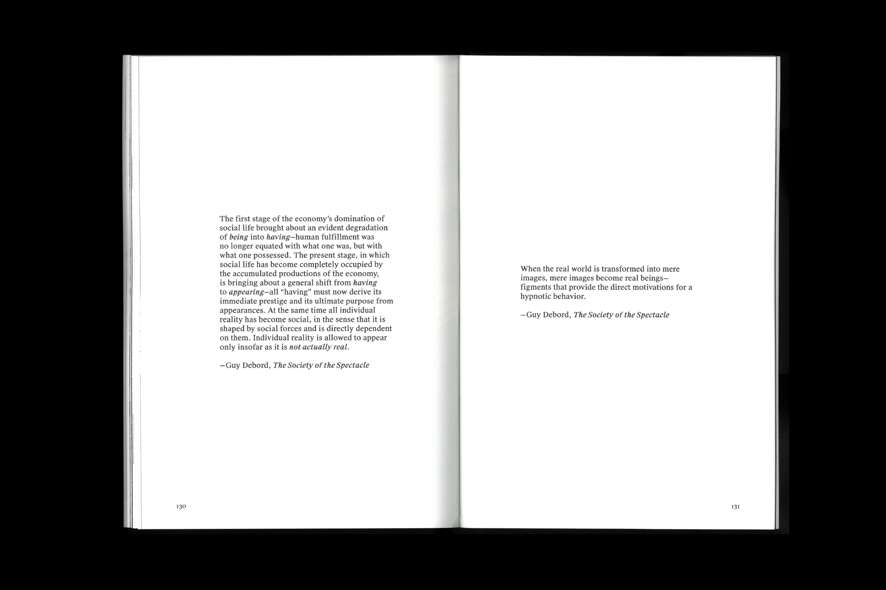
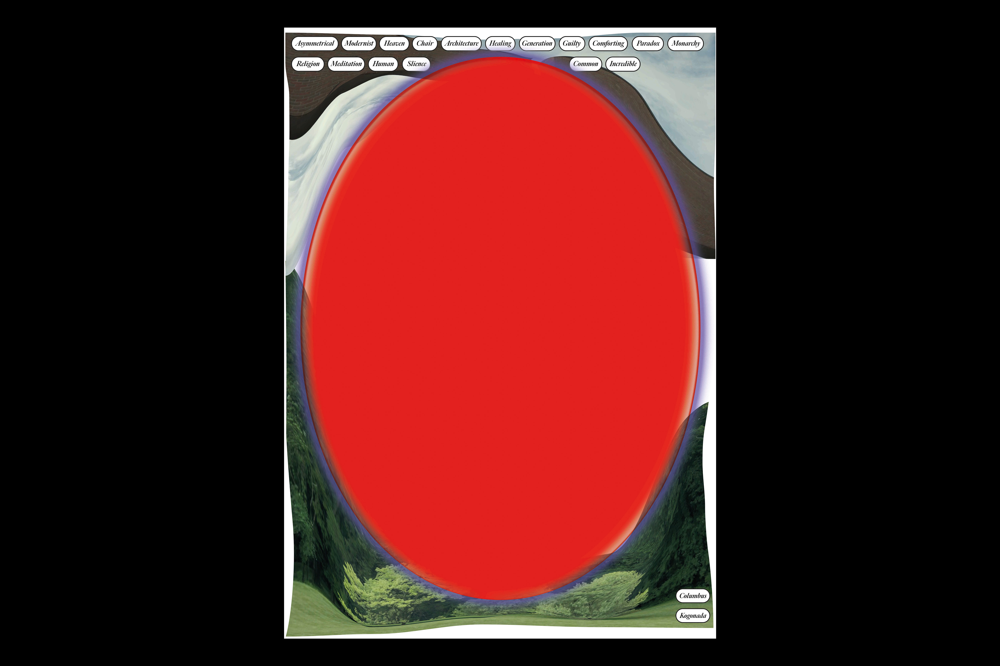
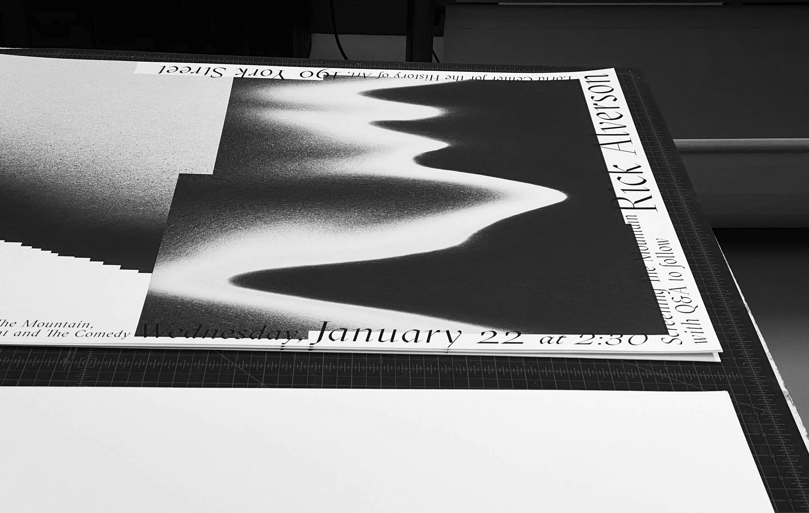
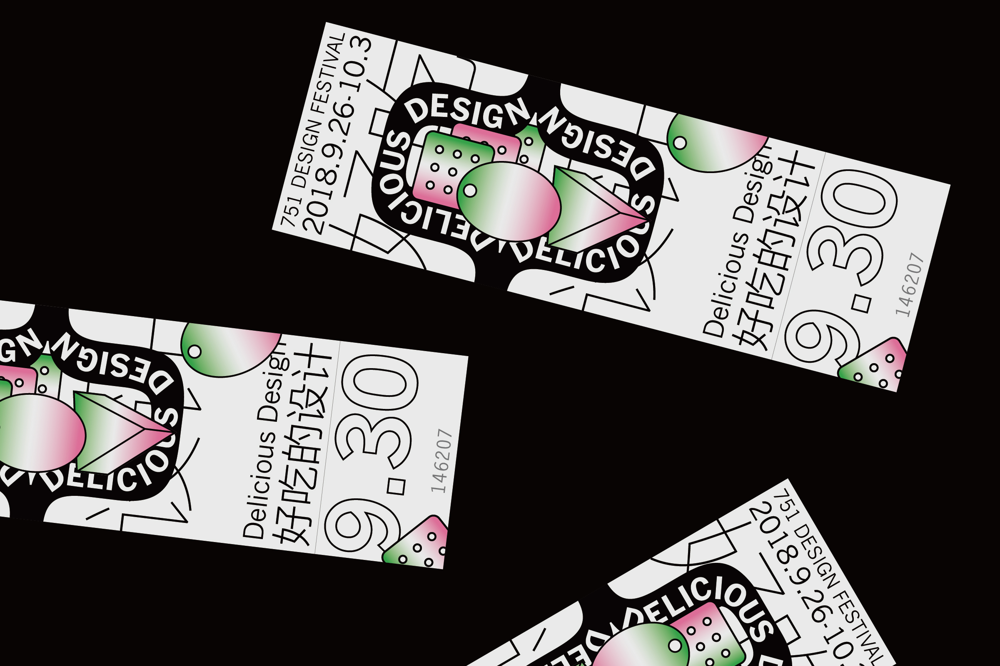
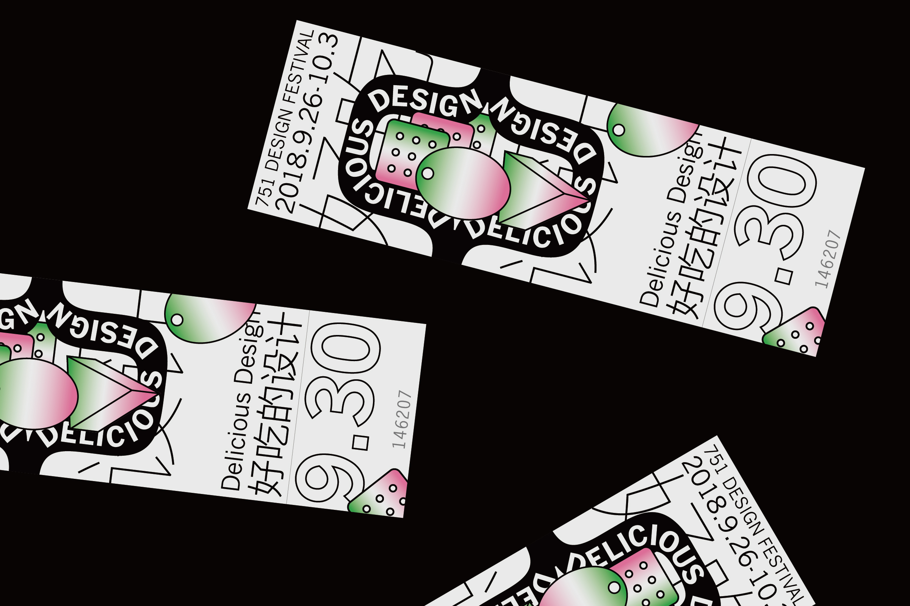

reflex arc 1
reflex arc 2
reflex arc 3
reflex arc 4
reflex arc 5
reflex arc 6

Thesis Book 1
Thesis Book 2
Thesis Book 3
Thesis Book 4
Thesis Book 5
Thesis Book 6

Thesis Book 7
SJTU Troposphere Symposium

Film Series Poster 1
Film Series Poster 2
Paprika 1
 Paprika 2
Paprika 2
 Paprika 3
Paprika 4
Paprika 3
Paprika 4
 Paprika 2
Paprika 2
 Paprika 3
Paprika 4
Paprika 3
Paprika 4
the mountain 1

the mountain 2
Julika Rudelius poster
irma boom poster
You Cannot Record a Sigh 1
You Cannot Record a Sigh 2
You Cannot Record a Sigh 3
You Cannot Record a Sigh 4
You Cannot Record a Sigh 5
You Cannot Record a Sigh 6
You Cannot Record a Sigh 7
You Cannot Record a Sigh 8
You Cannot Record a Sigh 9
walk walk walk 1
 walk walk walk 2
walk walk walk 3
walk walk walk 2
walk walk walk 3
 walk walk walk 2
walk walk walk 3
walk walk walk 2
walk walk walk 3
matthew carter
 matthew carter gif
matthew carter video
matthew carter gif
matthew carter video
matthew carter gif
matthew carter video
 typography online 1
typography online 2
typography online 3
typography online 4
typography online 1
typography online 2
typography online 3
typography online 4
 a thing 1
a thing 2
a thing 3
a thing 4
a thing 5
a thing 1
a thing 2
a thing 3
a thing 4
a thing 5
alone biography 1
alone biography 2
Lining Cushing 1
 Lining Cushing 2
Lining Cushing 3
Lining Cushing 4
Lining Cushing 5
Lining Cushing 2
Lining Cushing 3
Lining Cushing 4
Lining Cushing 5
 Lining Cushing 2
Lining Cushing 3
Lining Cushing 4
Lining Cushing 5
Lining Cushing 2
Lining Cushing 3
Lining Cushing 4
Lining Cushing 5
 hutongism 1
hutongism 2
hutongism 3
hutongism 1
hutongism 2
hutongism 3
 hutongism 4
hutongism 4
 hutongism 5
hutongism 5
 delicious design 1
delicious design 2
delicious design 3

delicious design 4
delicious design 5
delicious design 1
delicious design 2
delicious design 3

delicious design 4
delicious design 5
twoo cuup 1
twoo cuup 2
twoo cuup 3